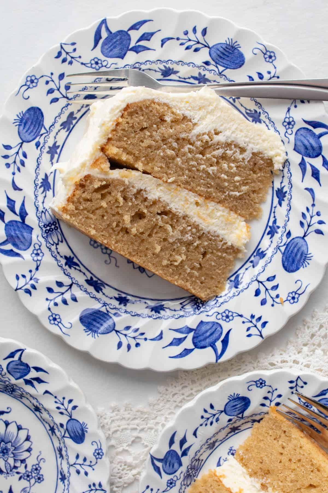

earl grey cake

description
ingredients
earl grey cake
- 3 1/2 cups all-purpose flour
- 1 tsp salt
- 2 tsp baking powder
<1i>1 1/4 cups hot water
- 4 tbsp loose-leaf earl grey tea
- 1/2 cup heavy cream
- 2 cups white sugar
- 2/3 cup neutral oil (like avocado oil)
- 3 large eggs
- 2 tsp pure vanilla extract
earl grey syrup
- 1/2 cup white sugar
- 1/2 cup water
- 1 tbsp loose-leaf earl grey tea
frosting
- 8 oz cream cheese, room temperature
- 1 cup unsalted butter, room temperature
- 2 cups icing sugar
- 1/2 tsp pure vanilla extract
steps
- preheat the oven to 350 degrees.
- cut out a round piece of parchment paper and add to the bottom of two 8-inch round cakepans. grease the insides too.
- whisk flour, salt, and baking powder together in a large mixing bowl and set aside.
- in a saucepan, pour boiling water over 4 tablespoons of earl grey tea leaves and steep for five minutes. after steeping, add heavy cream, stir, and let sit for five minutes.
- in a separate bowl, whisk together sugar, oil, eggs, and vanilla. strain the steeped tea, add to this bowl, and stir again.
- add the wet ingredients to the dry ingredients and stir until batter is smooth.
- pour half the batter into each cake pan. bake for 40 minutes or until a toothpick comes out clean.
- remove and allow to cool completely. for best results, wrap in plastic wrap and refrigerate until assembly time.
for the syrup:
- add sugar, water, and tea leaves to a sauce pan.
- simmer until the sugar is dissolved.
- remove from the heat and allow mixture to steep for 10 minutes. strain into a bowl and set aside
for the frosting:
- add cream cheese and butter to a bowl and use a stand-mixer to whip for several minutes until creamy.
- on a low speed, add icing sugar, a tablespoon of your syrup, and vanilla.
- after the icing sugar is combined, increase to medium-high speed and whip until light and fluffy
assembly time:
- trim the tops of the chilled cakes with a serrated knife until they're flat.
- using a pasty brush, brush the top of the first cake layer with 1-2 tbsps of earl grey syrup.
- add a dollop of icing and spread evenly.
- top with the second cake layer and brush this layer with syrup as well.
- with the rest of the icing, frost the top and sides of the cake.